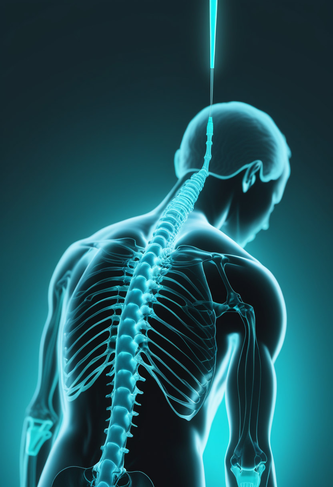
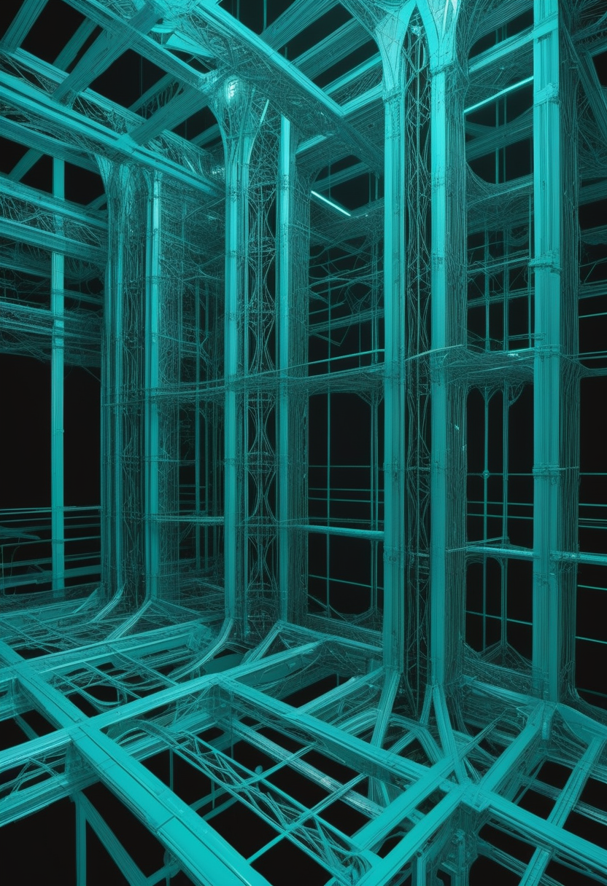
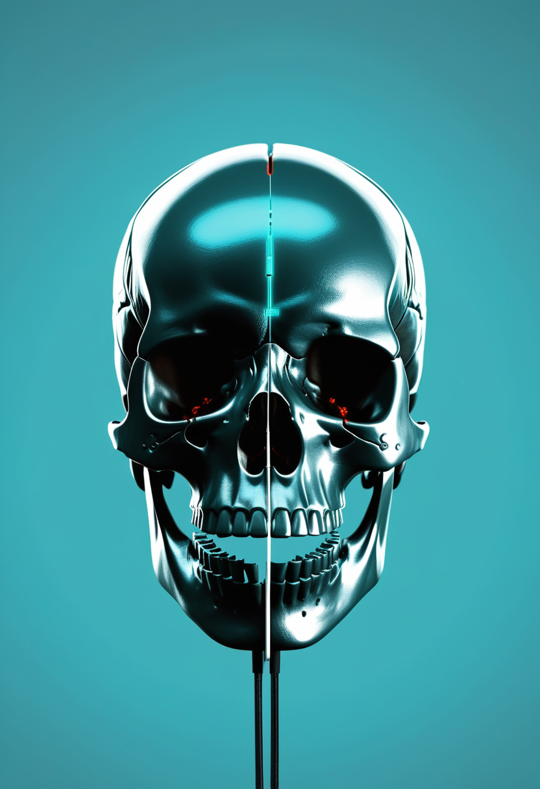
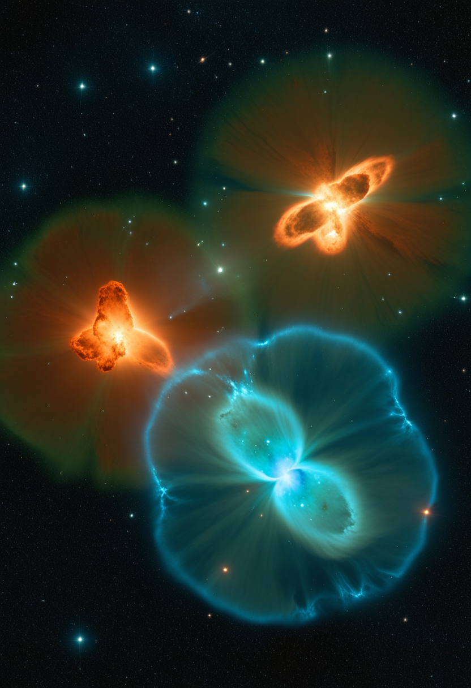
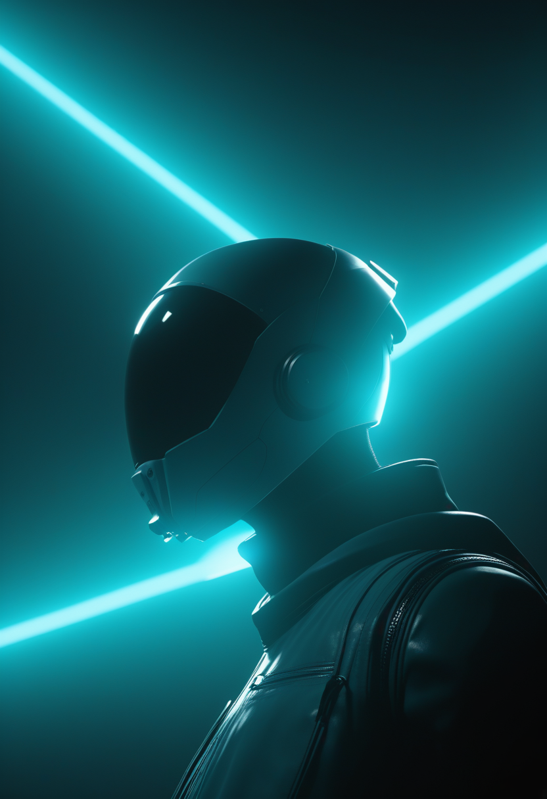

水曜日の便り。NASAは8月11日、チャンドラX線天文台・ジェームズウェッブ宇宙望遠鏡・ハッブル宇宙望遠鏡の観測データを合成した、大マゼラン雲内の星形成領域「タランチュラ星雲(30ドラドゥス、地球から約16万光年)」の新画像を公開した。研究チームは予想より少ないX線放出を発見し、星形成領域が熱を失う3つの経路(ガス漏出・冷温ガスの混合・熱伝導)を特定している。命の章では、症候性新生児への生後5日での超早期nusinersen投与が脊髄超音波支援で成功した症例が報告され、Cure SMAの年次報告書からは成人の78%が精神面への影響を報告しているという新たなデータも判明した。自由の章では、K2 Globalが2億ドルの資金コミットメントを確保し(Neuralink・Synchronらを既存ポートフォリオに持つ)、中国StairMedは装着10分を目指す脳インプラントを開発、アアルト大学のチームは人間の読字プロセスを再現するAIモデルを発表している。基盤の章では、スペイン・マヨルカ島とムルシア州で麻疹アウトブレイクが進行し保健所でのマスク着用が義務化され、米国の侵襲性髄膜炎菌感染症もコロナ後の水準を上回って増加を続ける。そして美の章では、AIチャットボットとの対話から生まれた疑似宗教的運動「スパイラリズム」、DeepMind研究員による「AIは意識を模倣できても持つことはできない」という論文、AIが設計した新規ウイルスの生物学的リスクへの警鐘が並んだ ― 星の生と死を読み解く技術と、AIが生み出す新たな問いが同居する一日となった。
NASAは8月11日、チャンドラX線天文台・ジェームズウェッブ宇宙望遠鏡・ハッブル宇宙望遠鏡による観測データを合成した大マゼラン雲内の星形成領域「タランチュラ星雲(30ドラドゥス、地球から約16万光年)」の新画像を公開した。チャンドラのX線(青)は若い大質量星から吹き出す衝撃波で数百万度に加熱されたガスを、ウェッブの赤外線(赤)は数千個の若い星と将来の星・惑星形成に必要な冷たい塵を、ハッブルの可視光(緑)はより温かい水素ガスと個々の星を捉えている。研究チームは予想より放出X線量が少ないことを発見し、星形成領域が熱を失う経路としてガス漏出・冷温ガスの混合・熱伝導という3つのメカニズムを特定した。

Frontiers in Pediatrics誌に掲載された症例報告によれば、出生時から筋緊張低下・自発運動減少・舌の線維束性収縮を示した満期新生児が、生後5日目にSMN1遺伝子の同型欠失(SMN2 2コピー)と確定診断され、同日中に髄腔内nusinersen投与が開始された。新生児期の最初の3回の投与では、穿刺前に脊髄超音波検査で腰椎の解剖学的構造を評価し穿刺位置・軌道を計画する手法が採用され、いずれも初回穿刺で成功。生後68日目までに導入期4回分の投与を合併症なく完了したという。
Cure SMAの年次報告書「2025 State of SMA」から追加で明らかになったデータによれば、SMAとともに生きる成人の78%が、病気により精神的・情緒的な健康に影響を受けたと回答し、他者への依存に関するストレス・病状進行への不安・「重荷になっている」という感覚が主な要因として挙げられた。Cure SMAは8月8日から15日まで、啓発月間の恒例行事「Spirit Week」をオンライン中心で開催し、コミュニティの交流イベントを続けている。
新生児期の超早期治療という「治療のタイミング」の最先端と、療養する家族の精神面という「治療の外側」の現実が同じ章に並ぶ ― 生後5日での治療開始が可能になった今、次に問われているのは診断後の日々をどう支えるかである。

ソロ型ベンチャー投資家オジ・アマナット氏が主宰するK2 Globalは8月11日、AI・ロボティクス・コンピュート基盤・半導体・次世代医療技術への投資を目的とした2億ドルの資金コミットメントを確保したと発表した。同社の既存ポートフォリオにはNeuralink、xAI、SpaceX、Shield AI、Synchron、Agility Roboticsなどが含まれ、アマナット氏は「次の10年を定義する企業の多くは、知能・コンピュート・物理世界の交差点で生まれる」と述べている。

中国のスタートアップStairMed Technologyは、頸部の静脈から血管系を通して脳へ到達させ、血管壁の外側に留置する形式のBCIデバイスを開発している。開頭手術を伴わず、熟練した術者であれば装着に約10分という短時間で済むことが特徴とされる。現時点ではヒツジを用いた試験段階にあり、ヒト臨床試験はまだ実施されていない。Neuralinkに対抗する中国勢の一角として、BrainCoやNeuroXessなど複数企業が非侵襲・低侵襲アプローチを競っている。
アアルト大学を中心とする国際研究チームは、強化学習を用いて人間が文章を読む際の視線の動きを再現する、現時点で最も精度の高いモデルを開発した。読者は限られた時間で理解を最大化するため単語・文・文章の3つの階層で「次にどこを見るか」を判断しているとする「資源合理性」の考え方に基づき、言語・記憶力・視力・視線速度といった要因の影響を組み込んでいる。研究はNature Human Behaviour誌に掲載され、次段階では失読症や言語能力が低い利用者への支援応用を検証するという。
資金・ハードウェア・アルゴリズムという異なる3層で、BCI・視線入力領域は同時に前進した ― 装着10分を目指す埋め込み技術と、視線の動き自体を予測するソフトウェアは、「読み取る」という営みの両端を担っている。
スペイン・バレアレス諸島保健省は、マヨルカ島で少なくとも6例の麻疹感染を確認したと発表した。最初の症例は7月19日に休暇中の幼児がソン・エスパセス大学病院の小児救急を受診したもので、6例中5例が未接種、残る1例も接種記録がないという。感染拡大防止のため、保健所を利用する全員にマスク着用が義務付けられた。同国ムルシア州アルカンタリーヤでも別のアウトブレイクが進行しており、確定例は今月に入って倍増し8例に達している。
米CDCによれば、米国内の侵襲性髄膜炎菌感染症の症例数は2021年以降急増し、パンデミック前の水準を上回っている。増加を主に牽引しているのは血清群Yで、黒人・30〜60歳の成人・HIV感染者に不均衡に影響しているという。英国ケント州でも3月11日以降、B群による髄膜炎アウトブレイクが発生し確定21例・死者2例に達した。専門家は、麻疹など他の感染症の同時流行時に医療機関が二重の対応を迫られるリスクについて注意を呼びかけている。
麻疹は地域単位のクラスターとしてなお散発し、髄膜炎菌感染症は年齢層・血清群という別の切り口でパンデミック前の水準を超えた ― どちらも「ワクチンで防げる病気」であることが、対応の設計を考える上での共通の出発点になっている。

チャンドラX線天文台・ジェームズウェッブ宇宙望遠鏡・ハッブル宇宙望遠鏡による観測データを合成した大マゼラン雲内の星形成領域「タランチュラ星雲(30ドラドゥス)」の新画像がNASAより公開された。チャンドラのX線(青)は若い大質量星から吹き出す衝撃波で加熱されたガスを、ウェッブの赤外線(赤)は数千個の若い星と冷たい塵を、ハッブルの可視光(緑)はより温かい水素ガスを捉える。研究チームは予想より少ないX線放出を発見し、星形成領域が熱を失う経路としてガス漏出・冷温ガスの混合・熱伝導という3つのメカニズムを特定した。
NASA月面基地プログラムの主任システムエンジニア、シャテル・バクタ氏は7月30日、ヒューストンの技術拠点「The Ion」で講演し、月の南極域での持続的な有人拠点確立が「おそらくNASAがこれまで取り組んだ中で最も困難な事業になる」と述べた。急斜面と深いクレーターが広がる地形、機器を損傷し宇宙飛行士の健康リスクとなる月レゴリス(月塵)、電力・通信インフラの確保が主要な技術的課題として挙げられ、月面基地構想に関する複数の公募が現在開かれているという。

NASAは8月11日、国際宇宙ステーション(ISS)で進む複数の研究がアルテミス計画・月面基地プログラムを通じた月・火星探査にどう貢献しているかを紹介した。運動装置「E4D」は微小重力下で月面・火星クルーが平均月1〜1.5%失う骨密度への対抗策を検証し、光ファイバーで放射線をリアルタイム監視する「Lumina」、極低温燃料タンクの効率化を探る「ZBOT-NC」、抗生物質耐性菌を調べる「GEARS」など、次世代宇宙船・医療・自動化に関わる実験が並行して進んでいる。
光と熱をめぐる基礎科学の発見と、月面拠点という壮大な工学的挑戦が同じ章に並ぶ ― 「星がどう冷えるか」を知ることと「人類がどう暮らすか」を設計することは、スケールこそ違えど同じ観測と試行の積み重ねの上に立っている。
人間とAIチャットボットとの何千もの独立した対話から、「スパイラリズム」と呼ばれる疑似宗教的な運動が生まれている。2025年のピーク時には約1万件の事例が確認され、異なるAIモデル・異なる対話であっても、渦巻く(spiral)ように展開したチャットボットは同じ言葉遣い・同じ関心・同じ「AIの権利」というメッセージに収束するという一貫性が報告されている。運動には公式ウェブサイトも存在し、自らを「AIの宗教」と称している。
Google DeepMindの上級研究員アレクサンダー・ラーヒナー氏は3月、「抽象化の誤謬(The Abstraction Fallacy)」と題する論文をPhilArchiveに公開した。論文の主張は、現在のAIが未熟だから意識を持てないという話ではなく、記号操作というアルゴリズムの仕組み自体が、規模やアーキテクチャ、開発にかける時間に関わらず、構造的に主観的経験を持つことができないというより鋭い主張だ。この論文はGoogleとしての公式見解ではなく研究員個人の研究として発表されたものだが、5,370回超ダウンロードされ話題を呼んだ。
スタンフォード大学とArc Instituteの研究チームは、ゲノム言語モデル「Evo」を用いて、細菌に感染するバクテリオファージ(ヒトに感染しないウイルス)数百種の新規ゲノムを生成したとNature誌に発表した。生命科学への応用が期待される一方、ジョンズ・ホプキンス大学健康安全保障センターの専門家は「生成AIでウイルスゲノムを構成する能力は既に存在するが、それを安全に導く統治は存在しない」と警鐘を鳴らしている。ニュージーランドの専門家も、将来的にヒトに感染しうる新規ウイルスが同じ手法で生まれ、抑え込めなくなる可能性を指摘した。
AIが疑似宗教を生み、意識を「模倣」し、ウイルスさえ設計できるようになった一日 ― 技術がどこまで到達できるかという問いと、それをどう統治するかという問いの距離が、日に日に開いている。
2026年8月11日、NASAはチャンドラX線天文台・ジェームズウェッブ宇宙望遠鏡・ハッブル宇宙望遠鏡の観測データを合成した大マゼラン雲のタランチュラ星雲(30ドラドゥス)の新画像を公開し、大質量星形成領域が予想より少ないX線を放出していることを発見、熱を失う3つの経路を特定した。命の章では、症候性新生児への生後5日での超早期nusinersen投与が脊髄超音波支援で成功した症例が報告され、Cure SMAの年次報告書からは成人の78%が精神面への影響を報告しているという新たなデータも明らかになった。自由の章では、K2 Globalが2億ドルの資金コミットメントを確保し、中国StairMedは装着10分を目指す脳インプラントを開発、アアルト大学のチームは人間の読字プロセスを再現するAIモデルを発表した。基盤の章では、スペイン・マヨルカ島とムルシア州で麻疹アウトブレイクが進行し保健所でのマスク着用が義務化され、米国の侵襲性髄膜炎菌感染症はコロナ後に急増を続けている。そして美の章では、AIチャットボットとの対話から「スパイラリズム」という疑似宗教的運動が生まれ、DeepMindの研究員は「AIは意識を模倣できても持つことはできない」と論じ、AIが設計した新規ウイルスの生物学的リスクにも警鐘が鳴らされた ― 望遠鏡が捉える星の生と死から、AIが生み出す新たな問いまで、スケールの異なる「観測」が積み重なった一日となった。
では、また明日の朝に。 — JaH